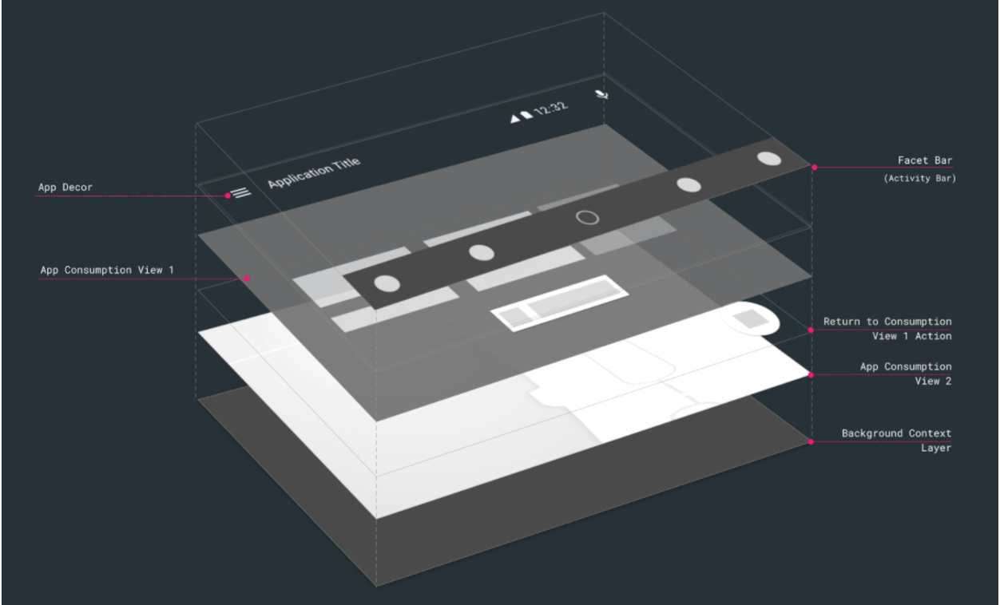

The Android Auto SDK allows you to write full screen applications for cars. Until now, applications for Android Auto were metadata driven and used the Media or Messaging APIs. However, with the Android Auto SDK your application can render full Android layouts to display rich content in the car, offering the flexibility to create custom experiences. Follow the UX guidelines to ensure your application meets the constraints that need to be considered while developing an application for cars.
This codelab walks you through the steps required to create your own full screen app and test it in a simulator or in your car.
In this codelab we are going to be building an application that uses features of the Android Auto system. We will also be going over a basic example of how to connect to and read out some basic car data.

This codelab is focused on Android Auto apps. A working knowledge of Android application development is presumed. If you need to brush up on Android development concepts, this is a great place to start.